1 Intro
- Until now: one outcome \(Y\) and a single predictor \(X\).
- Often useful to use multiple predictors to model the response. e.g
- Association between X and Y is affected by confounder: Smoking and age by youngsters are confounded and they both affect the lung capacity
- Which group of variables is associated with a given outcome. E.g Habitat and human activity on the biodiversity of the rain forest. (Size, age, height of the wood \(\rightarrow\) assess all effects simultaneously.
- Prediction of outcome for individuals: use as many predictive information simultaneously. E.g prediction of risk on mortality is used on a daily basis in intensive care units to prioritise patient care.
\(\rightarrow\) Extend simple linear regression to multiple predictors.
1.1 Prostate cancer example
Prostate specific antigen (PSA) and a number of clinical variables for 97 males with radical prostatectomy.
Association of PSA by
- tumor volume (lcavol)
- prostate weight (lweight)
- age
- benign prostate hypertrophy (lbph)
- seminal vesicle invasion (svi)
- capsular penetration (lcp)
- Gleason score (gleason)
- precentage gleason score 4/5 (pgg45)
prostate <- read_csv("https://raw.githubusercontent.com/GTPB/PSLS20/master/data/prostate.csv")
prostateprostate$svi <- as.factor(prostate$svi)
2 Additive multiple linair model
Separate simple linair models, like
\[E(Y|X_v)=\alpha+\beta_v X_v\]
- Association between lpsa en 1 variabele e.g lcavol.
- More accurate predictions by simultaneously accounting for multiple predictors
- Estimate for parameter \(\beta_v\) does not only capture the effect of tumor volume.
- \(\beta_v\) average difference for log-psa for patients that differ in 1 unit of the log tumor volume.
- Even if lcavol is not associated with lpsa then patients with a higher tumor volume can have a higher lpsa because their semen vesicles are affected (svi status 1). \(\rightarrow\) confounding.
- Compare patients with same svi status
- Is posible in multiple linear model
2.1 Statistical model
- \(p-1\) predictors \(X_1,...,X_{p-1}\) and outcome \(Y\) for \(n\) subjecten.
\[\begin{equation} Y_i =\beta_0 + \beta_1 X_{i1} + ... +\beta_{p-1} X_{ip-1} + \epsilon_i \end{equation}\]
- \(\beta_0,\beta_1,...,\beta_{p-1}\) unknown parameters
- \(\epsilon_i\) residuals that cannot be explained by predictors
- Estimation by least squares method
Model allows to
- predict the expected outcome for subjects given their values \(x_1,...,x_{p-1}\) for the predictor variables. \(E[Y\vert X_1=x_1, \ldots X_{p-1}=x_{p-1}]=\hat{\beta}_0+\hat{\beta}_1x_1+...+\hat{\beta}_{p-1}x_{p-1}\).
- Does the average outcome differ between two groups of patients that differ by \(\delta\) units in predictor \(X_j\) but have the same value for the remaining variables \(\{X_k,k=1,...,p,k\ne j\}\). \[ \begin{array}{l} E(Y|X_1=x_1,...,X_j=x_j+\delta,...,X_{p-1}=x_{p-1}) \\ \quad\quad - E(Y|X_1=x_1,...,X_j=x_j,...,X_{p-1}=x_{p-1}) \\\\ \quad =\beta_0 + \beta_1 x_1 + ... + \beta_j(x_j+\delta)+...+\beta_{p-1} x_{p-1}\\ \quad\quad- \beta_0 - \beta_1 x_1 - ... - \beta_jx_j-...-\beta_{p-1} x_{p-1} \\\\ \quad= \beta_j\delta \end{array} \]
Interpretation \(\beta_j\):
- difference in mean outcome between subjects that differ in one unit of \(X_j\), but have the same value for the remaining predictors in the model.
or
- Effect of predictor j corrected for the remaining predictors. e.g. effect of cancer volume correct for prostate weight and the svi status.
2.1.1 Prostate example
lmV <- lm(lpsa ~ lcavol, prostate)
summary(lmV)
Call:
lm(formula = lpsa ~ lcavol, data = prostate)
Residuals:
Min 1Q Median 3Q Max
-1.67624 -0.41648 0.09859 0.50709 1.89672
Coefficients:
Estimate Std. Error t value Pr(>|t|)
(Intercept) 1.50730 0.12194 12.36 <2e-16 ***
lcavol 0.71932 0.06819 10.55 <2e-16 ***
---
Signif. codes: 0 '***' 0.001 '**' 0.01 '*' 0.05 '.' 0.1 ' ' 1
Residual standard error: 0.7875 on 95 degrees of freedom
Multiple R-squared: 0.5394, Adjusted R-squared: 0.5346
F-statistic: 111.3 on 1 and 95 DF, p-value: < 2.2e-16lmVWS <- lm(lpsa ~ lcavol + lweight + svi, prostate)
summary(lmVWS)
Call:
lm(formula = lpsa ~ lcavol + lweight + svi, data = prostate)
Residuals:
Min 1Q Median 3Q Max
-1.72966 -0.45767 0.02814 0.46404 1.57012
Coefficients:
Estimate Std. Error t value Pr(>|t|)
(Intercept) -0.26807 0.54350 -0.493 0.62301
lcavol 0.55164 0.07467 7.388 6.3e-11 ***
lweight 0.50854 0.15017 3.386 0.00104 **
sviinvasion 0.66616 0.20978 3.176 0.00203 **
---
Signif. codes: 0 '***' 0.001 '**' 0.01 '*' 0.05 '.' 0.1 ' ' 1
Residual standard error: 0.7168 on 93 degrees of freedom
Multiple R-squared: 0.6264, Adjusted R-squared: 0.6144
F-statistic: 51.99 on 3 and 93 DF, p-value: < 2.2e-16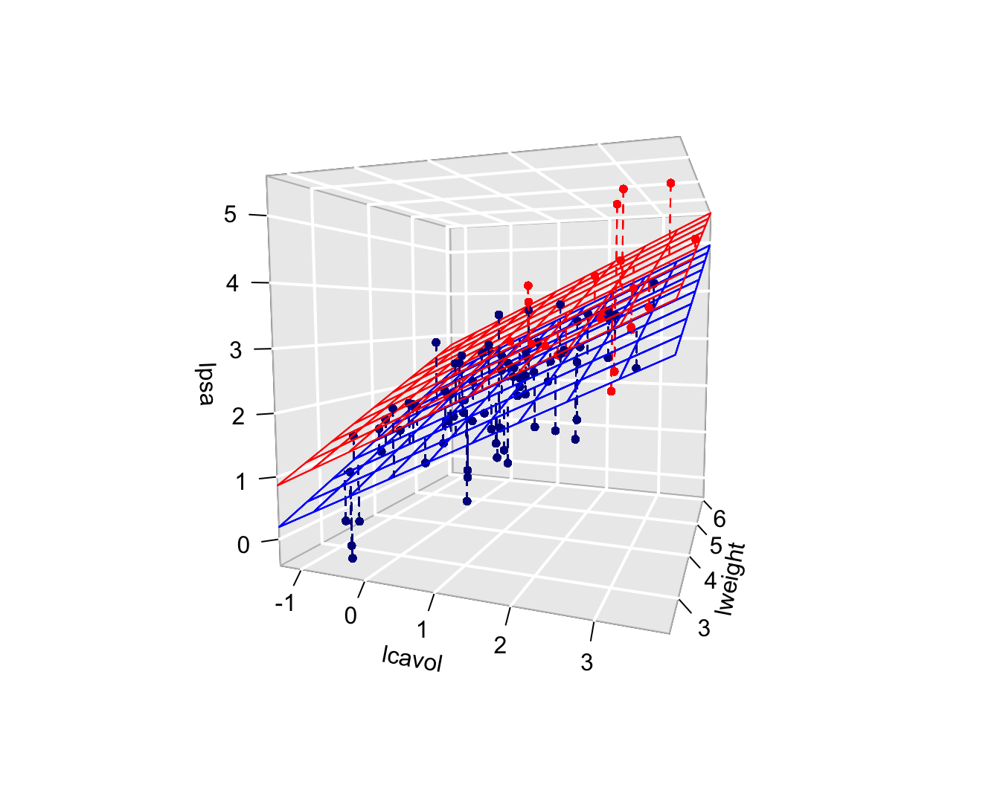
3 Inference in multiple linear models
If data are representative than the least squares estimators for the intercept and slopes are unbiased. \[E[\hat \beta_j]=\beta_j,\quad j=0,\ldots,p-1.\]
Gain insight in the distribution of the parameter estimators so as to generalize the effect in the sample to the population.
Additional assumptions are needed for inference.
Linearity
Independence
Homoscedasticity of equal variance
Normality: residuals \(\epsilon_i\) are normally distributed.
Under these assumptions: \[\epsilon_i \sim N(0,\sigma^2).\] en \[Y_i\sim N(\beta_0+\beta_1 X_{i1}+\ldots+\beta_{p-1} X_{ip-1},\sigma^2)\]
Slopes are again more precise if the predictor values have a larger range.
Conditional variance (\(\sigma^2\)) can again be estimated based on the mean squared error (MSE):
\[\hat\sigma^2=MSE=\frac{\sum\limits_{i=1}^n \left(y_i-\hat\beta_0-\hat\beta_1 X_{i1}-\ldots-\hat\beta_{p-1} X_{ip-1}\right)^2}{n-p}=\frac{\sum\limits_{i=1}^n e^2_i}{n-p}.\]
Again hypothesis tests and confidence intervals by \[T_k=\frac{\hat{\beta}_k-\beta_k}{SE(\hat{\beta}_k)} \text{ met } k=0, \ldots, p-1.\]
If all assumptions are satisfied than the statistics \(T_k\) t-distributed with \(n-p\) degrees of freedom.
When normality thus not hold, but lineariteit, independence and homoscedasticity are valid we can again adopt the CLT that states that statistic \(T_k\) is approximately normally distributed in large samples.
We can build confidence intervals on the slopes by: \[[\hat\beta_j - t_{n-p,\alpha/2} \text{SE}_{\hat\beta_j},\hat\beta_j + t_{n-p,\alpha/2} \text{SE}_{\hat\beta_j}]\].
confint(lmVWS) 2.5 % 97.5 %
(Intercept) -1.3473509 0.8112061
lcavol 0.4033628 0.6999144
lweight 0.2103288 0.8067430
sviinvasion 0.2495824 1.0827342Formal hypothesis tests: \[H_0: \beta_j=0\] \[H_1: \beta_j\neq0\]
With test statistic \[T=\frac{\hat{\beta}_j-0}{SE(\hat{\beta}_j)}\] which follows a t-distribution with \(n-p\) degrees of freedom under \(H_0\)
summary(lmVWS)
Call:
lm(formula = lpsa ~ lcavol + lweight + svi, data = prostate)
Residuals:
Min 1Q Median 3Q Max
-1.72966 -0.45767 0.02814 0.46404 1.57012
Coefficients:
Estimate Std. Error t value Pr(>|t|)
(Intercept) -0.26807 0.54350 -0.493 0.62301
lcavol 0.55164 0.07467 7.388 6.3e-11 ***
lweight 0.50854 0.15017 3.386 0.00104 **
sviinvasion 0.66616 0.20978 3.176 0.00203 **
---
Signif. codes: 0 '***' 0.001 '**' 0.01 '*' 0.05 '.' 0.1 ' ' 1
Residual standard error: 0.7168 on 93 degrees of freedom
Multiple R-squared: 0.6264, Adjusted R-squared: 0.6144
F-statistic: 51.99 on 3 and 93 DF, p-value: < 2.2e-163.1 Assess the model assumptions
plot(lmVWS)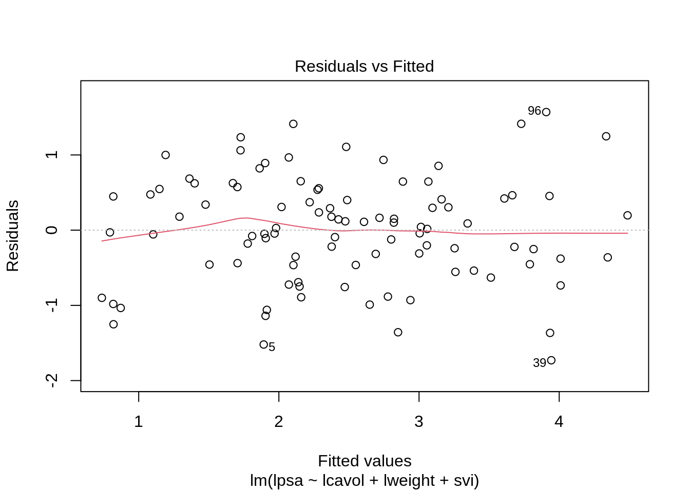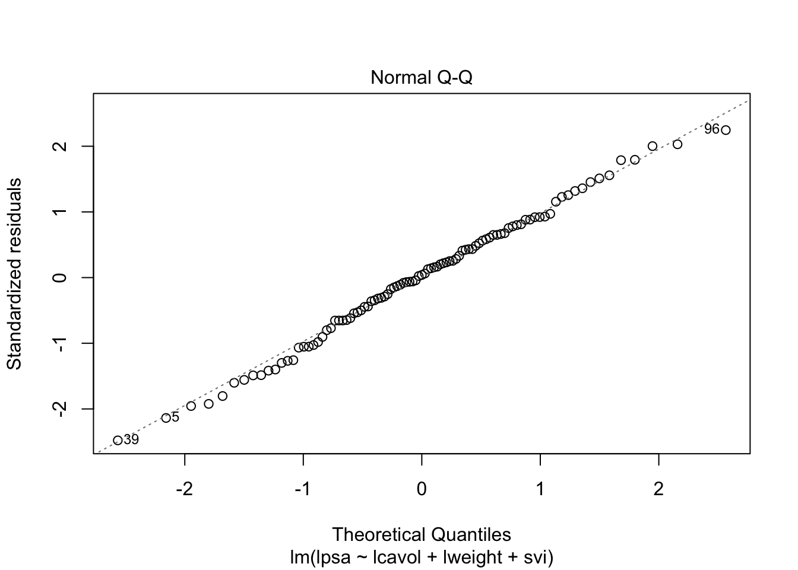 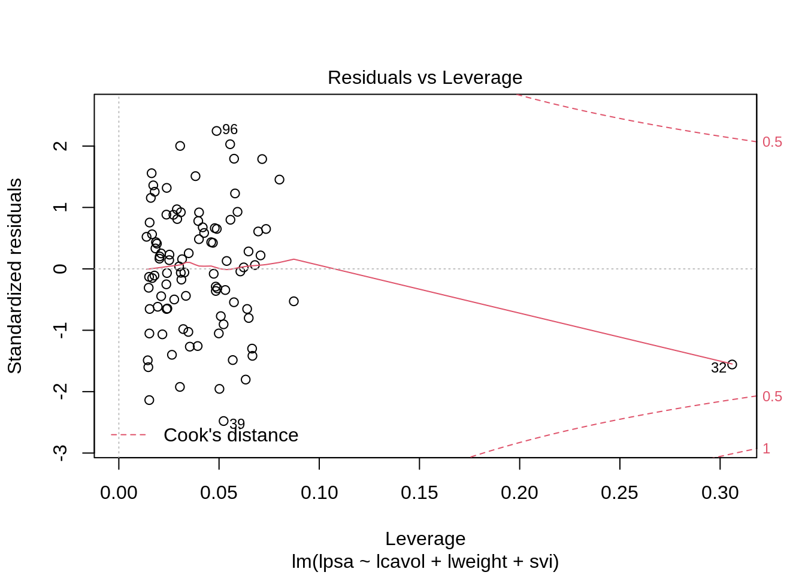
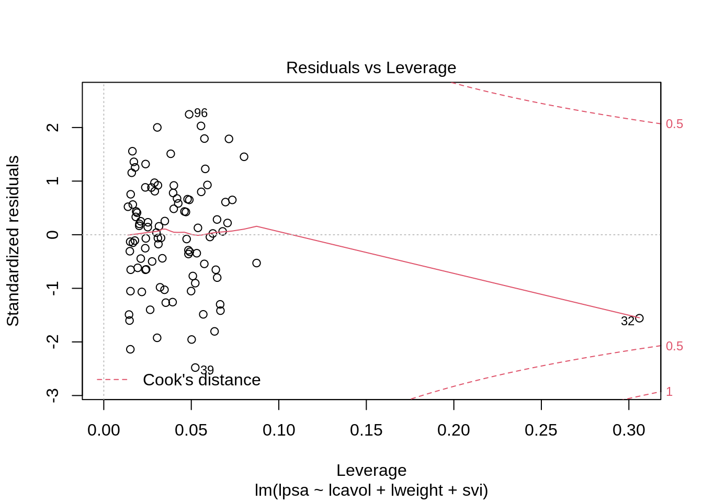
3.2 The non additive multiple linear model
3.2.1 Interaction between two continuous variables
The previous model is additive because the contribution of the cancer volume on lpsa does not depend on the height of the prostate weight and the svi status.
The slope for lcavol does not depend on log prostate weight and svi.
\[ \beta_0 + \beta_v (x_{v}+\delta_v) + \beta_w x_{w} +\beta_s x_{s} - \beta_0 - \beta_v x_{v} - \beta_w x_{w} -\beta_s x_s = \beta_v \delta_v \]
The svi status and the log-prostategewicht (\(x_w\)) do not influence the contribution of the log-tumor volume (\(x_v\)) to the average log-PSA and vice versa.
- It is however possible that the association of lpsa and lcavol depends on the prostate weight.
- The average difference in lpsa for patients that differ in one unit of the log-tumor volume can for instance can be higher for patients wiht a high tumor weight then for those with a low tumor weight.
- The effect of the tumor volume on the PSA depends on the prostate weight.
To model this interactie or effect modification we can add a product term of both variables to the model
\[ Y_i = \beta_0 + \beta_v x_{iv} + \beta_w x_{iw} +\beta_s x_{is} + \beta_{vw} x_{iv}x_{iw} +\epsilon_i \]
This term quantifies the interactie-effect of predictors \(x_v\) en \(x_w\) on the mean outcome.
Terms \(\beta_vx_{iv}\) and \(\beta_wx_{iw}\) are referred to as main effects of predictors \(x_v\) and \(x_w\).
The difference in lpsa for patients that differ 1 unit in \(X_v\) and have an equal log prostate weight and the same svi status now becomes:
\[ \begin{array}{l} E(Y | X_v=x_v +1, X_w=x_w, X_s=x_s) - E(Y | X_v=x_v, X_w=x_w, X_s=x_s) \\ \quad = \beta_0 + \beta_v (x_{v}+1) + \beta_w x_w +\beta_s x_{s} + \beta_{vw} (x_{v}+1) x_w - \beta_0 - \beta_v x_{v} - \beta_w x_w -\beta_s x_{s} - \beta_{vw} (x_{v}) x_w \\ \quad = \beta_v + \beta_{vw} x_w \end{array} \]
lmVWS_IntVW <- lm(lpsa ~ lcavol + lweight + svi + lcavol:lweight, prostate)
summary(lmVWS_IntVW)
Call:
lm(formula = lpsa ~ lcavol + lweight + svi + lcavol:lweight,
data = prostate)
Residuals:
Min 1Q Median 3Q Max
-1.65886 -0.44673 0.02082 0.50244 1.57457
Coefficients:
Estimate Std. Error t value Pr(>|t|)
(Intercept) -0.6430 0.7030 -0.915 0.36278
lcavol 1.0046 0.5427 1.851 0.06734 .
lweight 0.6146 0.1961 3.134 0.00232 **
sviinvasion 0.6859 0.2114 3.244 0.00164 **
lcavol:lweight -0.1246 0.1478 -0.843 0.40156
---
Signif. codes: 0 '***' 0.001 '**' 0.01 '*' 0.05 '.' 0.1 ' ' 1
Residual standard error: 0.7179 on 92 degrees of freedom
Multiple R-squared: 0.6293, Adjusted R-squared: 0.6132
F-statistic: 39.05 on 4 and 92 DF, p-value: < 2.2e-16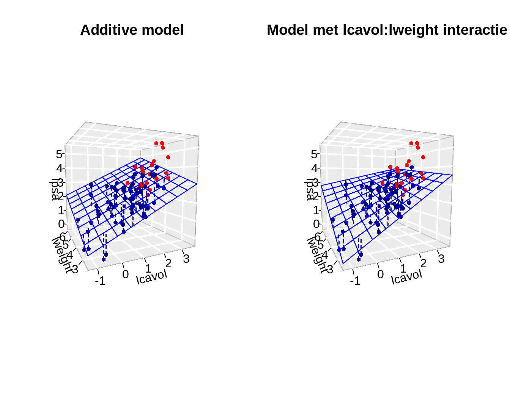
- Note that the interaction effect that is observed is not statistically significant (p=0.4).
- The main effects that are involved in the interaction cannot be interpreted separately from one another.
- We will therefore remove non-significant interaction terms from the model.
- Upon removal of non-significant interaction terms the main effects can be interpreted.
3.3 Interaction between a continuous variable and a factor variable
Interaction between lcavol \(\leftrightarrow\) svi and lweight \(\leftrightarrow\) svi.
The model becomes
\[Y=\beta_0+\beta_vX_v+\beta_wX_w+\beta_sX_s+\beta_{vs}X_vX_s + \beta_{ws}X_wX_s +\epsilon\]
lmVWS_IntVS_WS <- lm(lpsa ~ lcavol + lweight + svi + svi:lcavol + svi:lweight, data = prostate)
summary(lmVWS_IntVS_WS)
Call:
lm(formula = lpsa ~ lcavol + lweight + svi + svi:lcavol + svi:lweight,
data = prostate)
Residuals:
Min 1Q Median 3Q Max
-1.50902 -0.44807 0.06455 0.45657 1.54354
Coefficients:
Estimate Std. Error t value Pr(>|t|)
(Intercept) -0.52642 0.56793 -0.927 0.356422
lcavol 0.54060 0.07821 6.912 6.38e-10 ***
lweight 0.58292 0.15699 3.713 0.000353 ***
sviinvasion 3.43653 1.93954 1.772 0.079771 .
lcavol:sviinvasion 0.13467 0.25550 0.527 0.599410
lweight:sviinvasion -0.82740 0.52224 -1.584 0.116592
---
Signif. codes: 0 '***' 0.001 '**' 0.01 '*' 0.05 '.' 0.1 ' ' 1
Residual standard error: 0.7147 on 91 degrees of freedom
Multiple R-squared: 0.6367, Adjusted R-squared: 0.6167
F-statistic: 31.89 on 5 and 91 DF, p-value: < 2.2e-16Because \(X_S\) is a dummy variabele we obtain to distinct regression planes:
- Model for \(X_s=0\): \[Y=\beta_0+\beta_vX_v+\beta_wX_w + \epsilon\] where the main effects are the slope for lcavol and lweight
- and model for \(X_s=1\): \[\begin{array}{lcl} Y&=&\beta_0+\beta_vX_v+\beta_s+\beta_wX_w+\beta_{vs}X_v + \beta_{ws}X_w +\epsilon\\ &=& (\beta_0+\beta_s)+(\beta_v+\beta_{vs})X_v+(\beta_w+\beta_{ws})X_w+\epsilon \end{array}\] with intercept \(\beta_0+\beta_s\) and slopes \(\beta_v+\beta_{vs}\) and \(\beta_w+\beta_{ws}\)
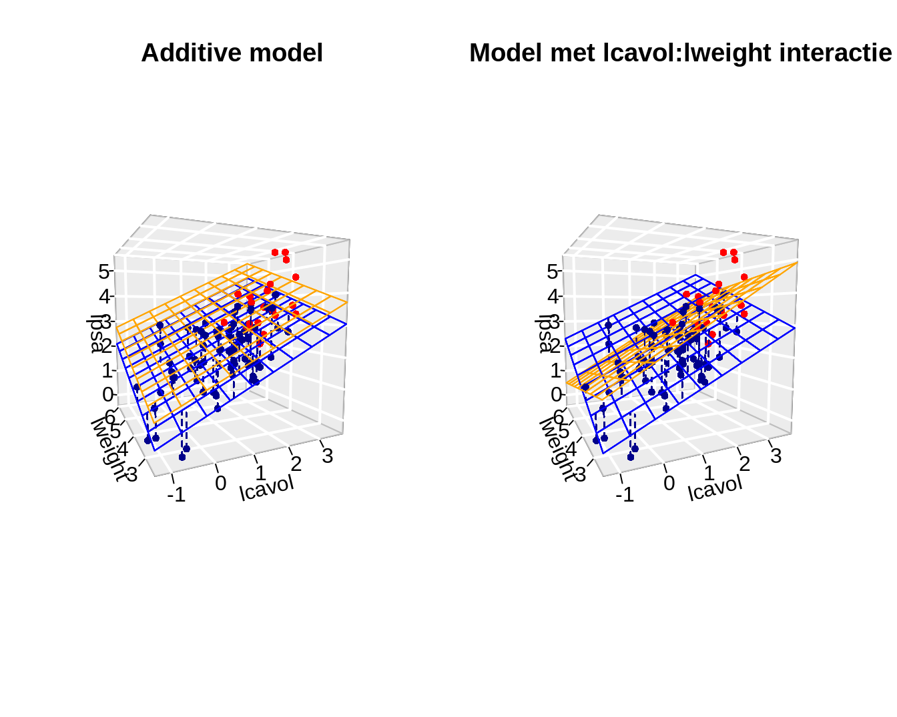
4 ANOVA Tabel
The total SSTot is again
\[ \text{SSTot} = \sum_{i=1}^n (Y_i - \bar{Y})^2. \]
The residual sum of squares remains similar \[ \text{SSE} = \sum_{i=1}^n (Y_i-\hat{Y}_i)^2. \]
Again the total sum of squares can be decomposed in , \[ \text{SSTot} = \text{SSR} + \text{SSE} , \] with \[ \text{SSR} = \sum_{i=1}^n (\hat{Y}_i-\bar{Y})^2. \]
We have following degrees of freedom and mean sum of squares:
- SSTot has \(n-1\) degrees of freedom and \(\text{SSTot}/(n-1)\) is an estimator for the total variance in \(Y\) (marginal distribution of \(Y\)).
- SSE has \(n-p\) degrees of freedom and \(\text{MSE}=\text{SSE}/(n-p)\) is an schatter for the residual variance of \(Y\) given the predictores (i.e. an estimator for the residual variance \(\sigma^2\) of the error term \(\epsilon\)).
- SSR has \(p-1\) degrees of freedom and \(\text{MSR}=\text{SSR}/(p-1)\) is the mean sum of squares of the regression.
The determination coefficients remains as before, i.e. \[ R^2 = 1-\frac{\text{SSE}}{\text{SSTot}} = \frac{\text{SSR}}{\text{SSTot}} \] and is the fraction of the total variability that can be explained by the regression model.
Teststatistic \(F=\text{MSR}/\text{MSE}\) is under \(H_0:\beta_1=\ldots=\beta_{p-1}=0\) distributed by an F distribution: \(F_{p-1;n-p}\).
Call:
lm(formula = lpsa ~ lcavol + lweight + svi, data = prostate)
Residuals:
Min 1Q Median 3Q Max
-1.72966 -0.45767 0.02814 0.46404 1.57012
Coefficients:
Estimate Std. Error t value Pr(>|t|)
(Intercept) -0.26807 0.54350 -0.493 0.62301
lcavol 0.55164 0.07467 7.388 6.3e-11 ***
lweight 0.50854 0.15017 3.386 0.00104 **
sviinvasion 0.66616 0.20978 3.176 0.00203 **
---
Signif. codes: 0 '***' 0.001 '**' 0.01 '*' 0.05 '.' 0.1 ' ' 1
Residual standard error: 0.7168 on 93 degrees of freedom
Multiple R-squared: 0.6264, Adjusted R-squared: 0.6144
F-statistic: 51.99 on 3 and 93 DF, p-value: < 2.2e-164.1 Additional sums of squares
Consider 2 models for the predictors \(x_1\) en \(x_2\): \[ Y_i = \beta_0+\beta_1 x_{i1} + \epsilon_i, \] with \(\epsilon_i\text{ iid } N(0,\sigma_1^{2})\), and \[ Y_i = \beta_0+\beta_1 x_{i1}+\beta_2 x_{i2} + \epsilon_i, \] with \(\epsilon_i\text{ iid } N(0,\sigma_2^{2})\).
for the first (gereduceerde) model we have decomposition \[ \text{SSTot} = \text{SSR}_1 + \text{SSE}_1 \] en for the second non-reduced model we have \[ \text{SSTot} = \text{SSR}_2 + \text{SSE}_2 \] (SSTot is of course the same because it only depends on the response and not of the models).
Definition of additional sum of squares The additional sum of squares of predictor \(x_2\) as compared to the model with only \(x_1\) as predictor is given by \[ \text{SSR}_{2\mid 1} = \text{SSE}_1-\text{SSE}_2=\text{SSR}_2-\text{SSR}_1. \]
Note that, \(\text{SSE}_1-\text{SSE}_2=\text{SSR}_2-\text{SSR}_1\) is triviaal is because of the decomposition of the total sum of squares.
The additional sum of squares \(\text{SSR}_{2\mid 1}\) can simply be interpreted as the additional variability that can be explained by adding predictor \(x_2\) to the model with predictor \(x_1\).
With this sum of squares we can further decompose the total sum of squares \[ \text{SSTot} = \text{SSR}_1+ \text{SSR}_{2\mid 1} + \text{SSE}. \] which follows directly from the definition \(\text{SSR}_{2\mid 1}\).
Extension: (\(s<p-1\)) \[ Y_i = \beta_0 + \beta_1 x_{i1} + \cdots + \beta_{s} x_{is} + \epsilon_i \] with \(\epsilon_i\text{ iid }N(0,\sigma_1^{2})\), and (\(s< q\leq p-1\)) \[ Y_i = \beta_0 + \beta_1 x_{i1} + \cdots + \beta_{s} x_{is} + \beta_{s+1} x_{is+1} + \cdots \beta_{q}x_{iq}+ \epsilon_i \] with \(\epsilon_i\text{ iid } N(0,\sigma_2^{2})\).
The additional sum of squares of predictor \(x_{s+1}, \ldots, x_q\) compared to a model with only predictors \(x_1,\ldots, x_{s}\) is given by
\[ \text{SSR}_{s+1, \ldots, q\mid 1,\ldots, s} = \text{SSE}_1-\text{SSE}_2=\text{SSR}_2-\text{SSR}_1. \]
4.1.1 Type I Sums of Squares
Suppose that \(p-1\) predictors are considered, and suppose the following sequence of models (\(s=2,\ldots, p-1\)) \[ Y_i = \beta_0 + \sum_{j=1}^{s} \beta_j x_{ij} + \epsilon_i \] wuth \(\epsilon_i\text{ iid } N(0,\sigma^{2})\).
- The corresponding sum of squares are denoted as \(\text{SSR}_{s}\) and \(\text{SSE}_{s}\).
- The sequence of models gives rise to the following sums of squares: \(\text{SSR}_{s\mid 1,\ldots, s-1}\).
- The latter sum of squares is referred to as type I sums of squares. Note that they depend on the order in which the models were added to the model.
We can show for model Model with \(s=p-1\) that \[ \text{SSTot} = \text{SSR}_1 + \text{SSR}_{2\mid 1} + \text{SSR}_{3\mid 1,2} + \cdots + \text{SSR}_{p-1\mid 1,\ldots, p-2} + \text{SSE}, \] with \(\text{SSE}\) the residual sum of squares of the model with all \(p-1\) predictors \[ \text{SSR}_1 + \text{SSR}_{2\mid 1} + \text{SSR}_{3\mid 1,2} + \cdots + \text{SSR}_{p-1\mid 1,\ldots, p-2} = \text{SSR} \] with \(\text{SSR}\) the sum of squares of all \(p-1\) predictors.
- The interpretation of each term depends on the order of the sequence of the regression models.
- Each type I SSR involves 1 predictor and has 1 degree of freedom (note that multiple dummies for a factor are typically removed together).
- For each type I SSR term the mean sum of squares is defined by \(\text{MSR}_{j\mid 1,\ldots, j-1}=\text{SSR}_{j\mid 1,\ldots, j-1}/1\).
- And teststatistic \(F=\text{MSR}_{j\mid 1,\ldots, j-1}/\text{MSE}\) follows a \(F_{1;n-(j+1)}\) distribution under \(H_0:\beta_j=0\) with \(s=j\).
- These sums of squares are the default sum of squares in the anova function of R.
4.1.2 Type III Sums of squares
Type III sum of squares for predictor \(x_j\) are given by the additional sum of squares \[ \text{SSR}_{j \mid 1,\ldots, j-1,j+1,\ldots, p-1} = \text{SSE}_1-\text{SSE}_2 \]
- \(\text{SSE}_2\) the sum of squares of the residuals of the model with all \(p-1\) predictors.
- \(\text{SSE}_1\) sum of squares of the residuals with all \(p-1\) predictors, except for predictor \(x_j\).
The type III sum of squares \(\text{SSR}_{j \mid 1,\ldots, j-1,j+1,\ldots, p-1}\) quantify the contribution in the total variance of the outcome explained by \(x_j\) that cannot be explained by the remaining \(p-2\) predictors.
The type III sum of squares has 1 degree of freedom because it involves 1 \(\beta\)-parameter.
For each type III SSR term the mean sum of squares is defined by \(\text{MSR}_{j \mid 1,\ldots, j-1,j+1,\ldots, p-1}=\text{SSR}_{j \mid 1,\ldots, j-1,j+1,\ldots, p-1}/1\).
Teststatistiek \(F=\text{MSR}_{j \mid 1,\ldots, j-1,j+1,\ldots, p-1}/\text{MSE}\) is \(F_{1;n-p}\) distributed under \(H_0:\beta_j=0\).
4.2 We can obtain these sums of squares using the Anova function from the car package.
library(car)
Anova(lmVWS, type = 3)The p-values are identical to those of two-sided t-tests
Note, however, that all dummies for factors with multiple levels will be taken out of the model at once. So then the type III sum of squares will have as many degrees of freedom as the number of dummies and an omnibus test is performed for the effect of the factor.
5 Diagnostics
5.1 Multicollineariteit
Call:
lm(formula = lpsa ~ lcavol + lweight + svi, data = prostate)
Residuals:
Min 1Q Median 3Q Max
-1.72966 -0.45767 0.02814 0.46404 1.57012
Coefficients:
Estimate Std. Error t value Pr(>|t|)
(Intercept) -0.26807 0.54350 -0.493 0.62301
lcavol 0.55164 0.07467 7.388 6.3e-11 ***
lweight 0.50854 0.15017 3.386 0.00104 **
sviinvasion 0.66616 0.20978 3.176 0.00203 **
---
Signif. codes: 0 '***' 0.001 '**' 0.01 '*' 0.05 '.' 0.1 ' ' 1
Residual standard error: 0.7168 on 93 degrees of freedom
Multiple R-squared: 0.6264, Adjusted R-squared: 0.6144
F-statistic: 51.99 on 3 and 93 DF, p-value: < 2.2e-16
Call:
lm(formula = lpsa ~ lcavol + lweight + svi + lcavol:lweight,
data = prostate)
Residuals:
Min 1Q Median 3Q Max
-1.65886 -0.44673 0.02082 0.50244 1.57457
Coefficients:
Estimate Std. Error t value Pr(>|t|)
(Intercept) -0.6430 0.7030 -0.915 0.36278
lcavol 1.0046 0.5427 1.851 0.06734 .
lweight 0.6146 0.1961 3.134 0.00232 **
sviinvasion 0.6859 0.2114 3.244 0.00164 **
lcavol:lweight -0.1246 0.1478 -0.843 0.40156
---
Signif. codes: 0 '***' 0.001 '**' 0.01 '*' 0.05 '.' 0.1 ' ' 1
Residual standard error: 0.7179 on 92 degrees of freedom
Multiple R-squared: 0.6293, Adjusted R-squared: 0.6132
F-statistic: 39.05 on 4 and 92 DF, p-value: < 2.2e-16Estimates are different from those in the additive model and the standard errors are much higher!
This is caused by the multicollinearity problem.
If 2 predictors are strongly correlated than they share a lot of information.
It is therefore difficult to estimate the individual contribution of each predictor on the outcome.
Least squares estimators become instable.
Standard errors become inflated.
As long as we only do predictions on the basis of the regression model without extrapolating beyond the range of the predictors observed in the sample multicolinearity is not problematic.
But for inference it is problematic.
cor(cbind(prostate$lcavol, prostate$lweight, prostate$lcavol * prostate$lweight)) [,1] [,2] [,3]
[1,] 1.0000000 0.1941283 0.9893127
[2,] 0.1941283 1.0000000 0.2835608
[3,] 0.9893127 0.2835608 1.0000000- High correlation between log-tumor volume and interaction.
- It is a known problem for higher order terms (interactions and quadratic terms)
- Detect multicollineariteit based on the correlation matrix or scatterplot matrix is suboptimal.
- In models with 3 or more predictors, say X1, X2, X3 we can have high multicollinearity while alle pairswise correlations between the predictors are low.
- We also have multicollinearity if there is a high correlation between X1 and a linair combination of X2 and X3.
5.1.1 Variance inflation factor (VIF)
For parameter \(j\) in de regression model \[\textrm{VIF}_j=\left(1-R_j^2\right)^{-1}\]
- In this expression \(R_j^2\) is the multiple determination coefficient of the linear regression of predictor j on the remaining predictors in the model.
- VIF is 1 if predictor j is not linear associated with the remaining predictors in the model.
- VIF is larger than 1 in all andere cases.
- VIF is the factor with which the observed variance inflates as compared to a model for which all predictoren would be independend.
- VIF > 10 \(\rightarrow\) strong multicollinearity.
5.1.2 Body fat example
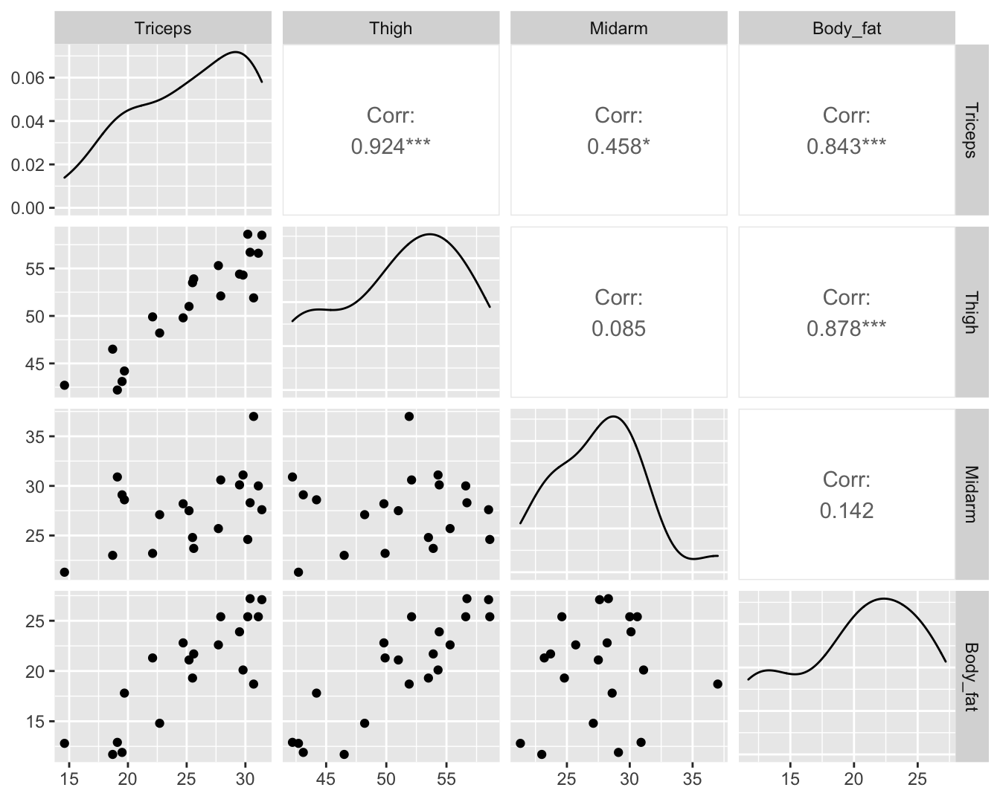
Call:
lm(formula = Body_fat ~ Triceps + Thigh + Midarm, data = bodyfat)
Residuals:
Min 1Q Median 3Q Max
-3.7263 -1.6111 0.3923 1.4656 4.1277
Coefficients:
Estimate Std. Error t value Pr(>|t|)
(Intercept) 117.085 99.782 1.173 0.258
Triceps 4.334 3.016 1.437 0.170
Thigh -2.857 2.582 -1.106 0.285
Midarm -2.186 1.595 -1.370 0.190
Residual standard error: 2.48 on 16 degrees of freedom
Multiple R-squared: 0.8014, Adjusted R-squared: 0.7641
F-statistic: 21.52 on 3 and 16 DF, p-value: 7.343e-06vif(lmFat) Triceps Thigh Midarm
708.8429 564.3434 104.6060
Call:
lm(formula = Midarm ~ Triceps + Thigh, data = bodyfat)
Residuals:
Min 1Q Median 3Q Max
-0.58200 -0.30625 0.02592 0.29526 0.56102
Coefficients:
Estimate Std. Error t value Pr(>|t|)
(Intercept) 62.33083 1.23934 50.29 <2e-16 ***
Triceps 1.88089 0.04498 41.82 <2e-16 ***
Thigh -1.60850 0.04316 -37.26 <2e-16 ***
---
Signif. codes: 0 '***' 0.001 '**' 0.01 '*' 0.05 '.' 0.1 ' ' 1
Residual standard error: 0.377 on 17 degrees of freedom
Multiple R-squared: 0.9904, Adjusted R-squared: 0.9893
F-statistic: 880.7 on 2 and 17 DF, p-value: < 2.2e-16We evaluate the VIF in the prostate cancer example for the additive model and the model with interactie.
vif(lmVWS) lcavol lweight svi
1.447048 1.039188 1.409189 vif(lmVWS_IntVW) lcavol lweight svi lcavol:lweight
76.193815 1.767121 1.426646 80.611657 - Inflation in interaction terms often caused because main effect get another interpretation.
5.2 Influencial Observaties
set.seed(112358)
nobs <- 20
sdy <- 1
x <- seq(0, 1, length = nobs)
y <- 10 + 5 * x + rnorm(nobs, sd = sdy)
x1 <- c(x, 0.5)
y1 <- c(y, 10 + 5 * 1.5 + rnorm(1, sd = sdy))
x2 <- c(x, 1.5)
y2 <- c(y, y1[21])
x3 <- c(x, 1.5)
y3 <- c(y, 11)
plot(x, y, xlim = range(c(x1, x2, x3)), ylim = range(c(y1, y2, y3)))
points(c(x1[21], x2[21], x3[21]), c(y1[21], y2[21], y3[21]), pch = as.character(1:3), col = 2:4)
abline(lm(y ~ x), lwd = 2)
abline(lm(y1 ~ x1), col = 2, lty = 2, lwd = 2)
abline(lm(y2 ~ x2), col = 3, lty = 3, lwd = 2)
abline(lm(y3 ~ x3), col = 4, lty = 4, lwd = 2)
legend("topleft", col = 1:4, lty = 1:4, legend = paste("lm", c("", as.character(1:3))), text.col = 1:4)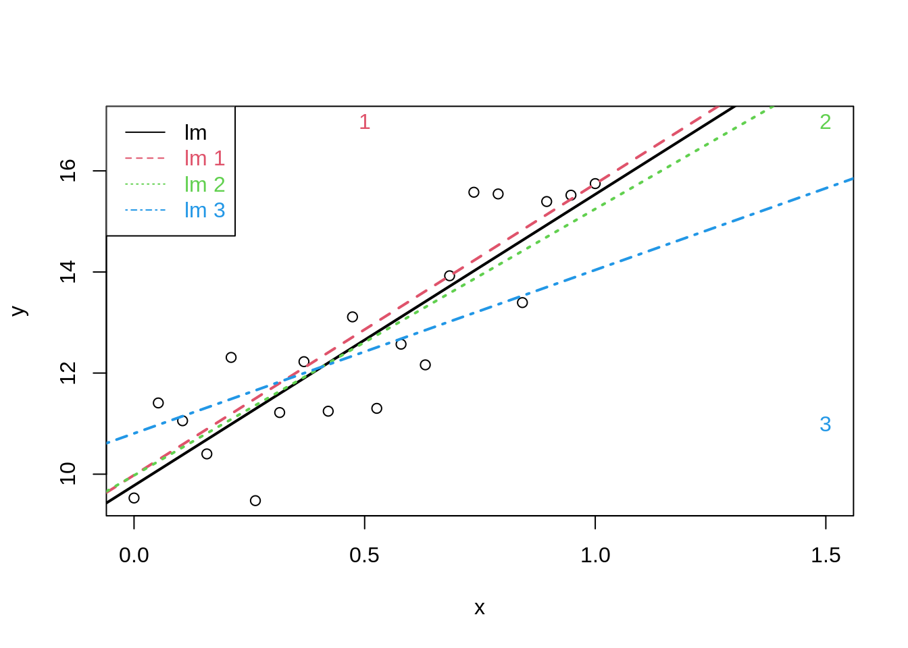
It is not desirable that a single observation largely influences the result of a linear regression analysis
Diagnostics allow us to detect extreme observations.
Studentized residuals to spot outliers
Leverage to spot observations with extreem covariate pattern
5.2.1 Cook’s distance
A statistics to assess the influence the effect of a single observation on the regression analysis
Cook’s distance for observation i is diagnostic measure for this particular observation on all all predictions or on all estimated parameters. \[D_i=\frac{\sum_{j=1}^n(\hat{Y}_j-\hat{Y}_{j(i)})^2}{p\textrm{MSE}}\]
Observation \(i\) has a large influence on the regression parameters and predictions if the Cook’s distance \(D_i\) is large.
Extreme Cook’s distance if it is larger than the 50% quantile of an \(F_{p+1,n-(p+1)}\)-distribution.

- Once we established that an observation is influential we can use DFBETAS to find the parameters for which the estimates are largely affected by the observation
- DFBETAS of observatie i is a diagnostic measure for each model parameter separately. \[\textrm{DFBETAS}_{j(i)}=\frac{\hat{\beta}_{j}-\hat{\beta}_{j(i)}}{\textrm{SD}(\hat{\beta}_{j})}\]
- DFBETAS is extreme when it is larger than 1 in small to moderate datasets or exceeds \(2/\sqrt{n}\) in large datasets.

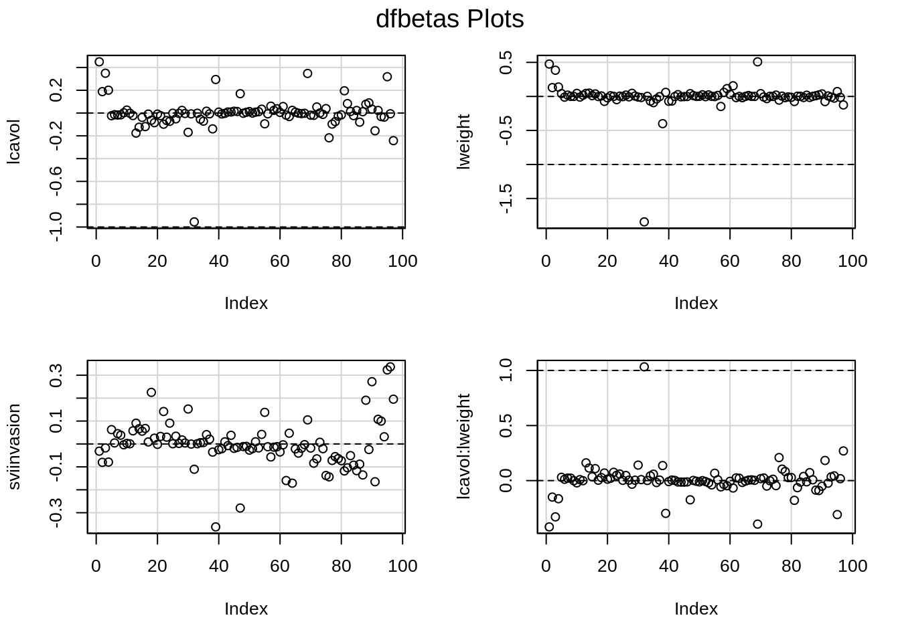
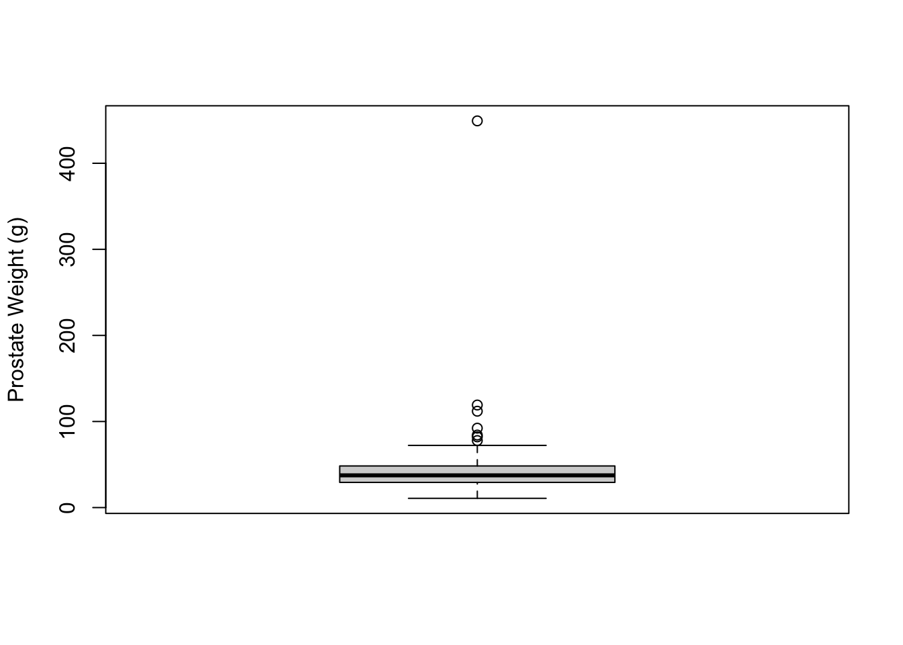
6 Constrasts
- In more complex designs that are modelled using general linear models one often has to assess multiple hypotheses.
- Moreover these hypotheses can typically not always be translated into a test on one parameter, but in a linear combination of model parameters.
- A linear combination of model parameters is also referred to as a contrast.
6.1 NHANES example
Suppose that researchers want to assess the association between age and bloodpressure.
Possibly this association will differ for females and males.
They want to assess following hypotheses:
- Is there an association between age and blood pressure for females?
- Is there an association between age and blood pressure for males?
- Is the association between age and blood pressure different for females and males?
6.2 Model
We fit a model for the average systolic blood pressure (BPSysAve) using age, gender and the interaction between age and gender for adult caucasians from the NHANES study.
library(NHANES)
bpData <- NHANES %>%
filter(
Race1 == "White" &
Age >= 18 &
!is.na(BPSysAve)
)
mBp1 <- lm(BPSysAve ~ Age * Gender, bpData)
par(mfrow = c(2, 2))
plot(mBp1)
Assumptions are not fullfilled!
- lineariteit is ok
- heteroscedasticity
- No normality: distribution is skewed to the right .
- Large dataset so we can adopt the CLT
6.2.1 Transformation
We fit a model using log2 transformed average systolic blood pressure (BPSysAve).
mBp2 <- lm(BPSysAve %>% log2() ~ Age * Gender, bpData)
par(mfrow = c(2, 2))
plot(mBp2)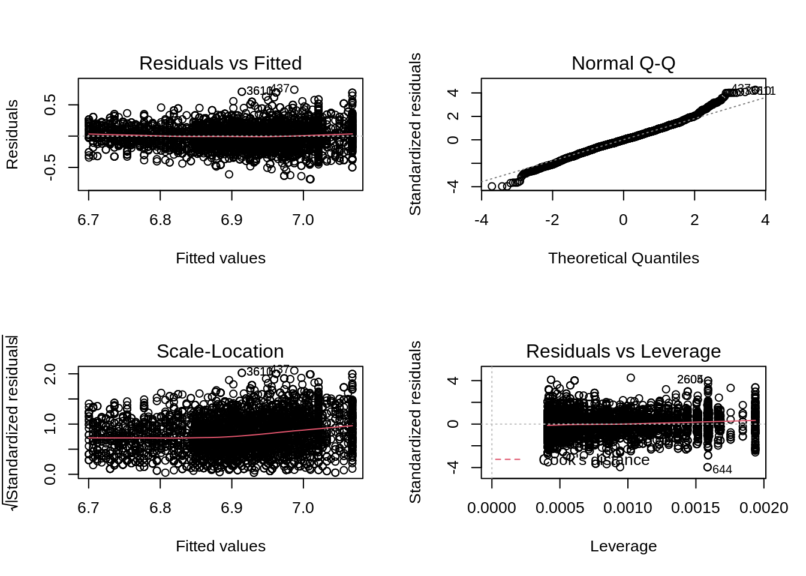
- Residuals are still heteroscedastic.
6.2.2 Remediate for heteroscedasticity
If the residual plot shows a cone we can get to valid inference for large samples by modeling the variance explicitly in function of the fitted response.
The inverse variance for each observation can than be used as a weight in the lm function.
- Model standard deviation in function of mean response.
- Do this by modeling absolute values of residuals in function of fitted values of model.
- We can than estimate the variance of Y for each observation by squaring the predictions for all observations using the model for the standard deviation.
- Inference remains valid asymptotically.
mSd <- lm(mBp1$res %>% abs() ~ mBp2$fitted)We estimate the model again:
mBp3 <- lm(BPSysAve ~ Age * Gender, bpData, w = 1 / mSd$fitted^2)Residuals are still heteroscedastic.
data.frame(residuals = mBp3$residuals, fit = mBp3$fitted) %>%
ggplot(aes(fit, residuals)) +
geom_point()
But we accounted for that using weights! Note that if we rescale the residuals using the standard deviation (multiplying them with the square root of the weight) we obtain rescaled residuals that are homoscedastic.
The model parameters are estimated using weighted least squares:
\[ SSE = \sum\limits_{i=1}^n w_i e_i^2\]
with \(w_i = 1/\hat \sigma^2_i\).
Weighted regression will correct for heteroscedasticity.
data.frame(scaled_residuals = mBp3$residuals / mSd$fitted, fit = mBp3$fitted) %>%
ggplot(aes(fit, scaled_residuals)) +
geom_point()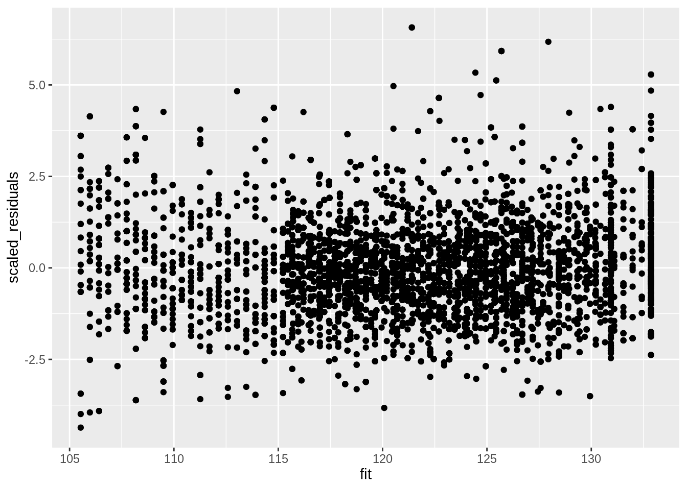
6.2.3 Inference
summary(mBp3)
Call:
lm(formula = BPSysAve ~ Age * Gender, data = bpData, weights = 1/mSd$fitted^2)
Weighted Residuals:
Min 1Q Median 3Q Max
-4.3642 -0.8494 -0.0940 0.7605 6.5701
Coefficients:
Estimate Std. Error t value Pr(>|t|)
(Intercept) 97.59709 0.63501 153.693 < 2e-16 ***
Age 0.44082 0.01505 29.294 < 2e-16 ***
Gendermale 13.36724 1.09017 12.262 < 2e-16 ***
Age:Gendermale -0.19115 0.02420 -7.899 3.45e-15 ***
---
Signif. codes: 0 '***' 0.001 '**' 0.01 '*' 0.05 '.' 0.1 ' ' 1
Residual standard error: 1.319 on 4828 degrees of freedom
Multiple R-squared: 0.2182, Adjusted R-squared: 0.2178
F-statistic: 449.3 on 3 and 4828 DF, p-value: < 2.2e-16The research questions translate to following nullhypotheses:
Association between blood pressure and age for females? \[H_0: \beta_\text{Age} = 0 \text{ vs } H_1: \beta_\text{Age} \neq 0 \]
Association between blood pressure and age for males? \[H_0: \beta_\text{Age} + \beta_\text{Age:Gendermale} = 0 \text{ vs } H_1: \beta_\text{Age} + \beta_\text{Age:Gendermale} \neq 0 \]
Is the association between blood pressure and age different for females and males? \[H_0: \beta_\text{Age:Gendermale} = 0 \text{ vs } H_1: \beta_\text{Age:Gendermale} \neq 0 \]
- We can assess hypotheses 1 and 3 immediately using the output of the model.
- Hypotheses 2 is a linear combination of two parameters.
- We also need multiple tests for assessing the association between sysBp and Age.
We can again use an Anova approach.
- We first assess the omnibus hypothesis that there is no association between age and blood pressure. \[ H_0: \beta_\text{Age} = \beta_\text{Age} + \beta_\text{Age:Gendermale} = \beta_\text{Age:Gendermale} = 0 \]
- which simplifies to assessing
\[ H_0: \beta_\text{Age} = \beta_\text{Age:Gendermale} = 0 \]
- We can do this by comparing two models: the full model with an effect for Gender, Age and Gender x Age interaction against a reduced model with only Gender.
- If we can reject this hypothesis we can again do a posthoc analysis for each of the contrasts.
6.2.3.1 Omnibus test
mBp0 <- lm(BPSysAve ~ Gender, bpData, w = 1 / mSd$fitted^2)
anova(mBp0, mBp3)6.2.3.2 Posthoc tests
For the posthoc tests we will again build upon the multcomp package.
library(multcomp)
bpPosthoc <- glht(mBp3, linfct = c(
"Age = 0",
"Age + Age:Gendermale = 0",
"Age:Gendermale = 0"
))
bpPosthoc %>% summary()
Simultaneous Tests for General Linear Hypotheses
Fit: lm(formula = BPSysAve ~ Age * Gender, data = bpData, weights = 1/mSd$fitted^2)
Linear Hypotheses:
Estimate Std. Error t value Pr(>|t|)
Age == 0 0.44082 0.01505 29.294 <1e-10 ***
Age + Age:Gendermale == 0 0.24967 0.01895 13.175 <1e-10 ***
Age:Gendermale == 0 -0.19115 0.02420 -7.899 <1e-10 ***
---
Signif. codes: 0 '***' 0.001 '**' 0.01 '*' 0.05 '.' 0.1 ' ' 1
(Adjusted p values reported -- single-step method)bpPosthocCI <- bpPosthoc %>% confint()
bpPosthocCI
Simultaneous Confidence Intervals
Fit: lm(formula = BPSysAve ~ Age * Gender, data = bpData, weights = 1/mSd$fitted^2)
Quantile = 2.3154
95% family-wise confidence level
Linear Hypotheses:
Estimate lwr upr
Age == 0 0.4408 0.4060 0.4757
Age + Age:Gendermale == 0 0.2497 0.2058 0.2936
Age:Gendermale == 0 -0.1911 -0.2472 -0.1351Note that the glht function allows us to define the contrasts by explicitely defining the nullhypothese using the names of the model parameters.
6.2.3.3 Conclusion
We can conclude that the association between age and blood pressure is extremely significant (p << 0.001).
The blood pressure for females that differ in age is on average 0.44 mm Hg higher per year of age difference for the eldest female and is extremely significant (p << 0.001, 95% CI [0.41, 0.48].
The blood pressure for males that differ in age is on average 0.25 mm Hg higher per year of age difference for the eldest male and is extremely significant (p << 0.001, 95% CI [0.21, 0.29].
The average blood pressure difference between subjects that differ in age is on average 0.19 mm Hg/jaar higher for females than for males (p << 0.001, 95% CI [0.14, 0.25]).